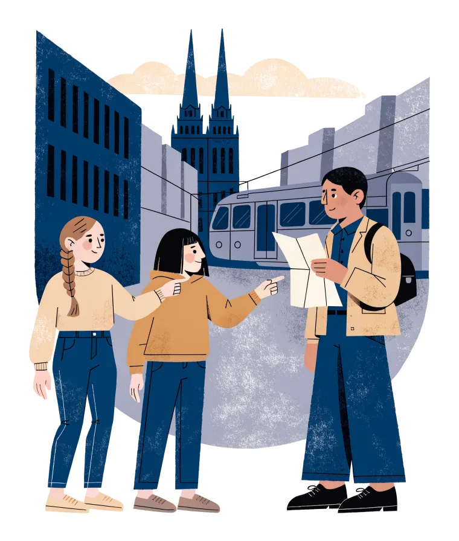
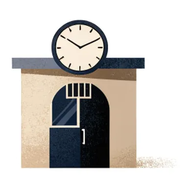
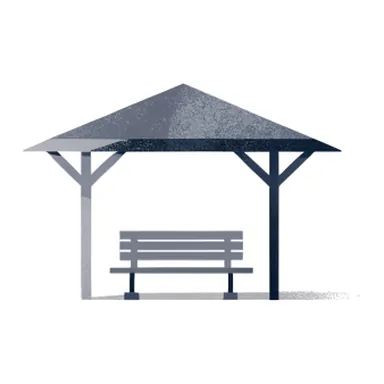
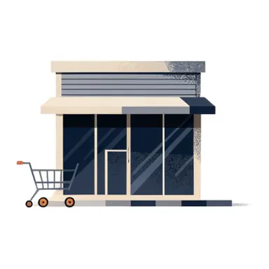
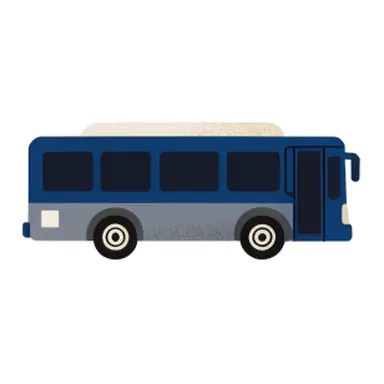
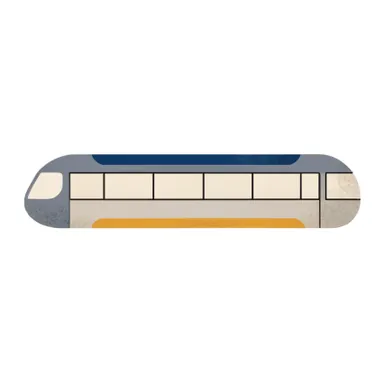
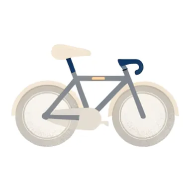
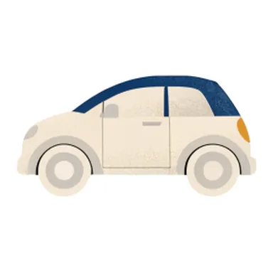
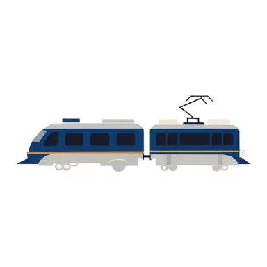
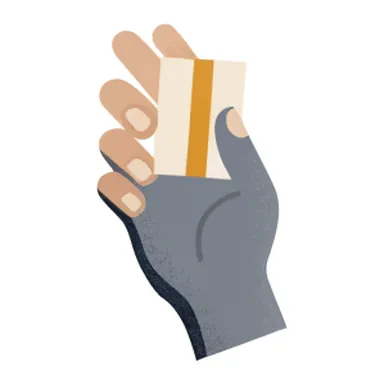

먼저 생각해 보세요.
처음 보는 어른에게 길을 알려 줄 때는 du와 Sie 가운데 무엇을 쓸까요?
처음 보는 어른에게는 Sie를 써요. 이 과에서 Sie에게 부탁하는 말도 배워요.

Yuna와 Emma가 쾰른 시내에 나왔어요. 한 관광객이 두 사람에게 길을 물어요.
눌러서 들어 보세요.
먼저 생각해 보세요.
처음 보는 어른에게 길을 알려 줄 때는 du와 Sie 가운데 무엇을 쓸까요?
처음 보는 어른에게는 Sie를 써요. 이 과에서 Sie에게 부탁하는 말도 배워요.
Lektion 1의 낱말 다섯 개를 다시 떠올려 보세요.
문법 Imperativ (du, ihr, Sie), mit + Dativ (mit dem Bus), zum, zur
이 과를 마치면 길을 묻고, 가는 방법을 독일어로 알려 줄 수 있어요.
쾰른 시내예요. 한 관광객이 Emma와 Yuna에게 길을 물어요.
들으면서 찾아보세요. 역까지 걸어서 몇 분 걸리나요?
금요일 쉬는 시간이에요. 토요일에 다 같이 수영장에 가기로 했어요.
들으면서 찾아보세요. Yuna는 수영장에 무엇을 타고 가나요?
두 대화를 듣고 답하세요.
Der Bahnhof ist neben dem Dom.
역까지 걸어서 몇 분 걸리나요?
관광객은 동물원에 어떻게 가나요?
Yuna fährt mit dem Fahrrad zum Schwimmbad.
자전거가 없어서 버스를 타요. Ich fahre mit dem Bus.
Yuna는 어디에서 내리나요?
친구들은 몇 시에 만나나요?
낱말 24개예요. 낱말이나 예문 앞의 단추를 누르면 소리가 나요. 명사는 der, die, das를 색으로 구분했어요.

der Bahnhof, die Bahnhöfe 기차역
Wo ist der Bahnhof?역이 어디에 있어요?

die Haltestelle, die Haltestellen 정류장
Die Haltestelle ist neben der Schule.정류장은 학교 옆에 있어요.
die Straße, die Straßen 길, 거리
Die Straße ist sehr schön.그 거리는 아주 예뻐요.
der Platz, die Plätze 광장
Der Platz ist groß.그 광장은 커요.

der Supermarkt, die Supermärkte 슈퍼마켓
Der Supermarkt ist neben dem Kino.슈퍼마켓은 영화관 옆에 있어요.

das Kino, die Kinos 영화관
Wir gehen zum Kino.우리는 영화관으로 가요.

das Schwimmbad, die Schwimmbäder 수영장
Wie komme ich zum Schwimmbad?수영장에 어떻게 가?

der Dom, die Dome 대성당
Der Dom ist sehr groß.대성당은 아주 커요.
geradeaus 곧장
Gehen Sie geradeaus.곧장 가세요.
links 왼쪽으로, 왼쪽에
Dann gehen Sie links.그다음에 왼쪽으로 가세요.
rechts 오른쪽으로, 오른쪽에
Das Kino ist rechts.영화관은 오른쪽에 있어요.
gehen 가다, 걷다
Wir gehen zum Bahnhof.우리는 역으로 가요.
zu Fuß 걸어서
Ich gehe zu Fuß.나는 걸어서 가요.
weit 먼
Ist es weit?먼가요?
die Minute, die Minuten 분
Zu Fuß sind es zehn Minuten.걸어서 10분이에요.

der Bus, die Busse 버스
Ich fahre mit dem Bus.나는 버스를 타고 가요.

die Bahn, die Bahnen 전철, 철도
Elif kommt mit der Bahn.Elif는 전철을 타고 와요.

das Fahrrad, die Fahrräder 자전거
Ich habe kein Fahrrad.나는 자전거가 없어요.

das Auto, die Autos 자동차
Sabine fährt mit dem Auto.Sabine는 차를 타고 가요.

der Zug, die Züge 기차
Der Zug kommt um zehn Uhr.기차는 10시에 와요.
die Linie, die Linien 노선, ~번
Nimm die Linie 12.12번을 타.

das Ticket, die Tickets 표
Kauft ein Ticket!표를 사!
einsteigen 타다
Wir steigen am Bahnhof ein.우리는 역에서 타요.
aussteigen 내리다
Steig am Stadtpark aus.시립공원에서 내려.
이 과의 낱말로 여덟 문제를 풀어요.
예문을 보고 답해 보세요.
du gehst에서 무엇을 빼면 Geh!가 되나요?
규칙
친구 한 명에게 '~해'라고 말할 때는 du 형태에서 du와 -st를 빼요. du gehst는 Geh!가 돼요. 친구 여러 명에게 말할 때는 ihr 형태에서 ihr만 빼요. ihr kommt는 Kommt!가 돼요. 나뉘는 동사의 앞부분은 문장 끝으로 가요.
| 동사 | du에게 | ihr에게 |
|---|---|---|
| gehen | Geh! | Geht! |
| kommen | Komm! | Kommt! |
| nehmen (du nimmst) | Nimm! | Nehmt! |
| fahren (du fährst) | Fahr! | Fahrt! |
| aussteigen | Steig aus! | Steigt aus! |
주의 fahren, schlafen처럼 a가 ä로 바뀌는 동사는 '~해'라고 말할 때 다시 a로 써요. du fährst이지만 Fahr!라고 해요. nehmen, lesen, essen처럼 e가 i로 바뀌는 동사는 바뀐 모양 그대로 써요. Nimm! Lies! Iss!
예문을 보고 답해 보세요.
Sie에게 부탁할 때 Sie는 어디에 오나요?
규칙
Sie에게 '~하세요'라고 말할 때는 동사 원형을 쓰고 바로 뒤에 Sie를 써요. bitte를 넣으면 더 공손해요.
| 동사 | Sie에게 |
|---|---|
| gehen | Gehen Sie! |
| nehmen | Nehmen Sie! |
| fahren | Fahren Sie! |
| aussteigen | Steigen Sie aus! |
주의 Sie에게 하는 부탁은 질문과 낱말 순서가 같아요. Gehen Sie links? 는 질문이고 Gehen Sie links! 는 부탁이에요. 부탁할 때는 문장 끝을 내려서 말해요.
예문을 보고 답해 보세요.
der Bus 앞에서 mit 뒤의 관사는 무엇인가요?
규칙
mit(~을 타고, ~와 함께)과 zu(~로) 뒤에는 항상 3격(Dativ)이 와요. der와 das는 dem, die는 der가 돼요. zu dem은 zum, zu der는 zur로 줄여요.
| der Bus, der Bahnhof | das Fahrrad, das Kino | die Bahn, die Schule | |
|---|---|---|---|
| mit | mit dem Bus | mit dem Fahrrad | mit der Bahn |
| zu | zum Bahnhof | zum Kino | zur Schule |
주의 걸어서 갈 때는 mit을 쓰지 않고 zu Fuß라고 해요. Ich gehe zu Fuß.
Elif가 길을 물어요. 듣고 답하세요.
Wie komme ich zum Kino?
Elif Entschuldigung, wie komme ich zum Kino?
Frau Zum Kino? Geh hier geradeaus und dann rechts.
Frau Das Kino ist neben dem Supermarkt.
Elif Ist es weit?
Frau Nein. Zu Fuß sind es fünf Minuten.
Elif는 어디에 가려고 하나요?
Elif는 어떻게 가야 하나요?
Wo ist das Kino?
걸어서 몇 분 걸리나요?
듣고 무엇을 타고 가는지 고르세요.
Lukas는 무엇을 타고 학교에 가나요?
Ich fahre mit dem Fahrrad zur Schule.
Sabine는 무엇을 타고 가나요?
Ich fahre mit dem Auto.
Elif는 무엇을 타고 가나요?
Wir fahren mit der Bahn zum Dom.
Emma는 어떻게 가나요?
Ich gehe zu Fuß.
Emma와 Yuna의 메시지를 읽고 답하세요.
Samstag, 13 Uhr
Yuna, wo bist du?
Ich bin am Bahnhof. Wie komme ich zum Kino?
Nimm die Linie 5 und steig am Stadtpark aus.
Okay! Ist das Kino neben dem Park?
Nein. Geh am Park links. Das Kino ist neben dem Supermarkt.
Danke! Ich komme in zwanzig Minuten.
Super. Lukas und Elif sind auch hier.
Yuna ist am Bahnhof.
Wo steigt Yuna aus?
Das Kino ist neben dem Park.
Das Kino ist neben dem Supermarkt.
Yuna는 몇 분 뒤에 오나요?
친구에게 하는 말로 알맞은 것을 고르세요.
geradeaus!
곧장 가!
den Bus!
버스를 타!
mit der Bahn!
전철을 타고 가!
am Dom aus!
대성당에서 내려!
bitte um drei!
세 시에 와!
낱말을 순서대로 눌러 어른에게 하는 말을 만드세요.
여기서 곧장 가세요.
전철을 타세요.
역에서 내리세요.
버스를 타고 가세요.
mit 뒤에 알맞은 말을 고르세요.
Ich fahre mit Bus.
Elif fährt mit Bahn.
Emma fährt mit Fahrrad.
Wir fahren mit Zug.
Sabine fährt mit Auto.
zum과 zur 가운데 알맞은 말을 고르세요.
Wie komme ich Bahnhof?
Geh Haltestelle!
Wir gehen Kino.
Yuna fährt mit dem Bus Schule.
Wie komme ich Schwimmbad?
Gehen Sie Dom!
낱말과 뜻을 짝지으세요.
듣고 그대로 써 보세요.
Es ist nicht weit. 멀지 않아요.
Ich fahre mit dem Bus. 나는 버스 타고 가.
Geh zur Haltestelle. 정류장으로 가.
Entschuldigung, wo ist …? 실례합니다, …이 어디에 있어요?
Wie komme ich zum Bahnhof? / Wie komme ich zur Schule? 역에 어떻게 가요? / 학교에 어떻게 가요?
Ist es weit? 먼가요?
Geh geradeaus. / Gehen Sie geradeaus. 곧장 가. / 곧장 가세요.
Dann links. / Dann rechts. 그다음에 왼쪽. / 그다음에 오른쪽.
Es ist nicht weit. 멀지 않아요.
Zu Fuß sind es zehn Minuten. 걸어서 10분이에요.
Ich fahre mit dem Bus. 버스를 타고 가요.
Nimm die Linie 12. 12번을 타.
Steig am Dom aus. 대성당에서 내려.
대화 A에서 역할을 하나 고르세요. 상대의 말은 음성으로 나오고, 내 차례에는 직접 말해요.
학교에 무엇을 타고 가는지, 몇 분 걸리는지, 학교 옆에 무엇이 있는지 적으세요. 걸어서 가면 첫 문장을 Ich gehe zu Fuß zur Schule.로 바꿔 말해요.
Ich fahre mit dem Bus zur Schule.
Es sind zwanzig Minuten.
Meine Schule ist neben dem Park.
Der Weg
친구가 우리 집에 놀러 와요. 학교에서 우리 집까지 오는 길을 메시지로 알려 주세요. 친구에게 하는 말로 네 문장쯤 써요.
Nimm den Bus, die Linie 12. Steig am Stadtpark aus. Geh geradeaus und dann links. Mein Haus ist neben dem Supermarkt. Es ist nicht weit.
다 쓴 뒤에 확인해 보세요.
Ich kann nach dem Weg fragen.길을 물을 수 있어요.
Ich kann den Weg beschreiben.가는 길을 알려 줄 수 있어요.
Ich kann sagen, wie ich zur Schule komme.학교에 어떻게 가는지 말할 수 있어요.